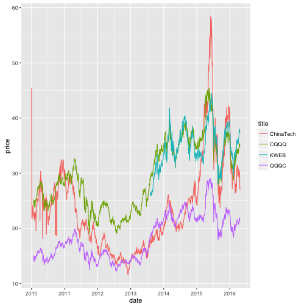

Eat and Play Team
China Company US Stock Analysis
Yi Li, Zhang Qin, Zhaoqin Ye
Eat and Play Team: China Company US Stock Analysis
- question answered:
- What are some patterns in the decomposition of China companies' US Stock
- How do these stocks perform compared to US stocks from 2005 to present
- how do these stocks perform compared to Chinese domestic stocks from 2005 to present
Chinese company US stock decomposition
- dataset: NASDAQ, NYSE, AMEX exchanges stock listing (variables: symbol, sector, IPOyear, exchange)
 Technology dominates all other sectors, so we choose to use this sector's stocks for further comparison with different markets
Technology dominates all other sectors, so we choose to use this sector's stocks for further comparison with different markets

NYSE has more in past, but NASDAQ increases greatly and exceeds NYSE in recent years
Performance against US stocks
- method learned in class:
- use XML library to scrape data table in HTML page
- convert all history data to same tiny data format
- process and mutate date variables in R
- dataset:
- Top technology ETFs listing (variables: symbol)
- Yahoo Finance stock history price (variables: date, Close price)
 China company's stocks do not perform as well as US stocks in tech sector
China company's stocks do not perform as well as US stocks in tech sector
Three ETFs of China stocks also indicates the low performance against foreign stocks in same category
Performance against Chinese domestic stocks
- method not in class:
- data scraping for non-html tables, using Scraper plugin in Chrome
- deal with non-ASCII encoded data table information
- clean HTML page for link tag information as data input using XPathApply
- dataset:
- Chinese stock listing by sector (variables: symbol, exchange, sector)
- Yahoo Finance stock history price (variables: date, Close price)
Follow very similar patterns, especially from 2009-2014, but starting from 2014 domestic tech stocks tend to outperform foreign stocks due to China's tech boom
 ETFs follow similar pattern to domestic average, further indicating domestic stock influence to foreign China stock price